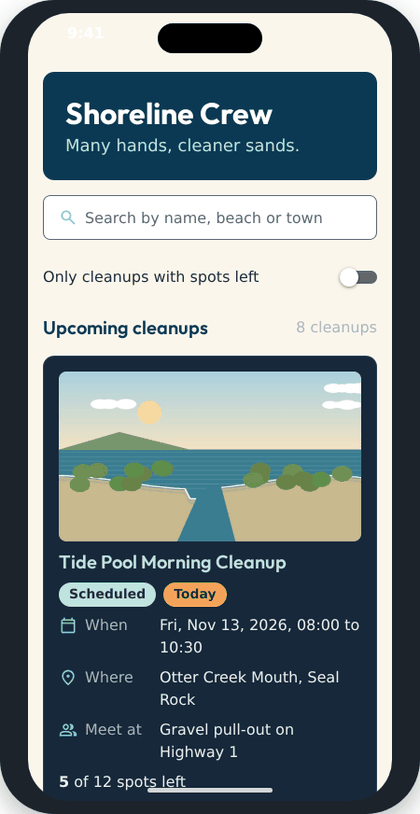
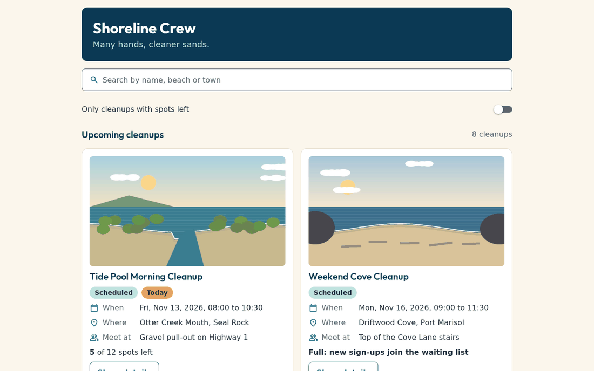

React Native & Expo · Part 1 · Session 7 of 26 · 3 hours
Session 7
Responsive, Platform-Specific and Themed UI
One app, many screens: any width, any platform, day and night.
Today
Three hours, one lesson
| 0:00 | Warm-up: Lesson 2.4, retrieved |
| 0:10 | 2.5 High tide, low tide, night |
| 0:20 | Size and platform: demo |
| 0:40 | Dark mode and the theme: demo |
| 0:55 | Lab Tasks 1 and 2 |
| 1:10 | Break (10 min) |
| 1:20 | Lab Task 3 and debrief |
| 1:30 | Project: Steps 1 to 6 together |
| 2:50 | Exit ticket, homework, what to bring next time |
LABS Lab files are in
labs/module-07. Work in starter/, never the solution.Warm-up · 4 minutes, no notes
Lesson 2.4, retrieved
- A Pressable has
onClick={signUp}. What do tsc and lint say, and what does a tap do? - The HQ's
onChange={(e) => setQuery(e.target.value)}on a TextInput: what replaces it? - On a phone, a volunteer types in the search field and taps the clear button. What makes the first tap reach the button?
WHY On paper first. Then we answer out loud.
2.5
Responsive, Platform-Specific and Themed UI
Read while rendering, never once when a file loads.
2.5 · Welcome
No media queries, no CSS variables
- Size: a number from a hook, changing with the window
- Platform: 'ios', 'android' or 'web', for real differences
- Dark mode: the phone's setting, read by a hook
- A color baked in when the file loaded stays a daytime color
2.5 · Mental model
Tables at high and low tide
- Narrow beach: one long line of tables
- Wide beach: the same tables, two side by side
- Look at the sand right now, not at which beach it is
useWindowDimensionslooks again when the tide moves
2.5 · Live demo, headless
The window, a stale read, a platform
cat window.txt
WindowSize, a phone: 390 by 844, text size ×1, 3 pixels per point WindowSize, after the resize: 1024 by 768, text size ×1, 2 pixels per point columns from Dimensions.get: 2 (read when the file loaded) PlatformNote: ios: Swipe from the left edge to go back
WHY The hook followed. Dimensions.get read once. Jest renders as iOS.
2.5 · The project's code
One breakpoint, one hook
shoreline-crew/src/hooks/useColumns.ts
import { useWindowDimensions } from 'react-native'; import { layout } from '@/theme/spacing'; // How many cards fit side by side in the window right now: 1 on a phone, 2 on a wider screen. // useWindowDimensions re-renders the component whenever the window changes size. export function useColumns() { const { width } = useWindowDimensions(); return width >= layout.twoColumns ? 2 : 1; }
RULE flex, %, maxWidth first. The window's size only when the structure changes.
2.5 · Platform
Four tools, smallest first
Platform.OS: a conditionPlatform.select({ ios, android, default }): one value each- Platform-only props:
ios_backgroundColor,android_ripple - Platform files:
x.web.tsnext tox.ts(tsc checks x.ts)
WATCH Size and features before platform. Never Platform.isPad for a layout.
2.5 · The web preview
Half dark, and no error

2.5 · The project's code
The first platform file
shoreline-crew/src/hooks/useColorScheme.web.ts
export function useColorScheme() { return useSyncExternalStore(subscribe, getColorScheme, () => 'light' as const); }
WHY The third argument: the value on the server. Start light, then switch.
2.5 · Mental model
The beach at night
- Same beach, same crew, same jobs
- Headlamps and reflective vests: a night kit
- Roles are the jobs; the palettes are day kit and night kit
- No pure black · lighter accents · the same 4.5:1
2.5 · The project's code
The night kit must be complete
shoreline-crew/src/theme/colors.ts
export const darkColors = { page: night.page, surface: night.surface, border: night.border, text: night.ink, textMuted: night.muted, heading: brand.seafoam, error: night.coral,
WHY
} satisfies ThemeColors;: a missing role is a type error.2.5 · Exercise 2
A role the dark set forgot
npx tsc --noEmit
src/theme/colors.ts:74:3 - error TS1360: Type '{ page: "#0f1b26"; surface: "#16283a"; border: "#2b4257"; text: "#e9eef3"; textMuted: "#a9b4c0"; heading: "#bfe3df"; error: "#ff9b85"; banner: "#0b3954"; onBanner: "#ffffff"; onBannerAccent: "#bfe3df"; ... 7 more ...; knob: "#ffffff"; }' does not satisfy the expected type 'ThemeColors'.
src/theme/theme.ts:22:27 - error TS2741: Property 'trackOff' is missing in type '{ page: "#0f1b26"; surface: "#16283a"; border: "#2b4257"; text: "#e9eef3"; textMuted: "#a9b4c0"; heading: "#bfe3df"; error: "#ff9b85"; banner: "#0b3954"; onBanner: "#ffffff"; onBannerAccent: "#bfe3df"; ... 7 more ...; knob: "#ffffff"; }' but required in type 'ThemeColors'.
Found 2 errors in 2 files.
WHY The first error is at the cause, in the palette. Without satisfies, only theme.ts.
2.5 · The project's code
Styles made once per theme
shoreline-crew/src/hooks/useTheme.ts
export function createThemedStyles<T>(make: (theme: Theme) => T) { const sheets = { light: make(themes.light), dark: make(themes.dark) }; return function useStyles(): T { return sheets[useTheme().scheme]; };
WHY Outside the component: createThemedStyles. Inside: const styles = useStyles();
2.5 · Common mistake
A hook at the top of a file
npx expo lint
52:20 error React Hook "useTheme" cannot be called at the top level. React Hooks must be called in a React function component or a custom React Hook function react-hooks/rules-of-hooks
WATCH Even if it ran, it would run once: the baked-in color again.
2.5 · Common mistake
The other useTheme
npx tsc --noEmit
src/components/SwitchRow.tsx:25:37 - error TS2339: Property 'trackOff' does not exist on type '{ primary: ____ColorValue_Internal; background: ____ColorValue_Internal; card: ____ColorValue_Internal; text: ____ColorValue_Internal; border: ____ColorValue_Internal; notification: ____ColorValue_Internal; }'.
WATCH primary, background, card…: the navigator's colors. Import from @/hooks/useTheme.
2.5 · Guided lab · 15 minutes
Beach tiles by day and by night
labs/module-07/l2_5-responsive-platform-specific-and-themed-ui/starter- Task 1: the missing role (tsc) and a weak night color (test)
- Task 2:
createThemedStylesin SiteTile - Task 3 after the break: columns from the window
LAB The tests switch dark mode and resize the window: no phone.
10
Break
Back at 1:20.
2.5 · Guided lab · 10 minutes
Task 3: columns that follow
Dimensions.getat the top: read onceuseWindowDimensions()inside the hook- Done:
Tests: 5 passed, 5 total - Which three things were read once at load?
2.5 · Project Step 1
Nine files: a to-do list
npx tsc --noEmit
Found 9 errors in 9 files.
Errors Files
1 src/app/index.tsx:12
1 src/components/AppText.tsx:3
1 src/components/Badge.tsx:4
1 src/components/Button.tsx:4
1 src/components/EventCard.tsx:11
1 src/components/Icon.tsx:4
1 src/components/Screen.tsx:5
1 src/components/SearchField.tsx:4
1 src/components/SwitchRow.tsx:4
WHY Fix one file, run tsc again, read the count aloud.
2.5 · Project · 80 minutes
Shoreline Crew by Day and by Night
- Two palettes (and tsc's list)
- The theme and its hooks (and the web one)
- Every component themed
- The navigator and the status bar
- Two columns from 700, 960 wide at most
- Wide and dark: try it
PROJECT Step 7 (checks, commit) goes home.
2.5 · The project's code
The navigator and the status bar
shoreline-crew/src/app/_layout.tsx
const navigationTheme = { ...base, colors: { ...base.colors, primary: colors.action, background: colors.page, card: colors.surface, text: colors.text, border: colors.border, }, }; return ( <ThemeProvider value={navigationTheme}> {/* Dark clock and battery icons on a light page, light ones on a dark page */} <StatusBar style={scheme === 'dark' ? 'light' : 'dark'} />
2.5 · Project
1280 wide: two columns, 960 at most

2.5 · Project
The same screen at night

2.5 · Project
Controls at night

2.5 · On your phone
Dark mode for real
- iPhone: Settings > Display & Brightness > Dark
- Android: Settings > Display > Dark theme (names vary)
- The app changes while open; the clock turns light
- The switch looks gray when off on both
HEDGE The course could not run a phone while it was checked: these follow the platforms' documentation.
Wrap-up · 4 minutes
Exit ticket
- One thing that goes stale when read at load, and its replacement
- Two columns: the platform or the window? Why?
- Why a designed dark palette, not inverted colors?
WHY No notes. Workbook Exit Ticket box or a sticky note on the way out.
Before Session 8
Homework and bring list
- Step 7; your phone at night; Exercises 1 and 2; the quiz; the journal
- Lab: the tasks you did not finish
- Notice: every card is drawn, even far below the screen
- Bring: the course folder (committed), the workbook
NEXT Session 8: FlatList, SectionList and big lists. The columns come along.